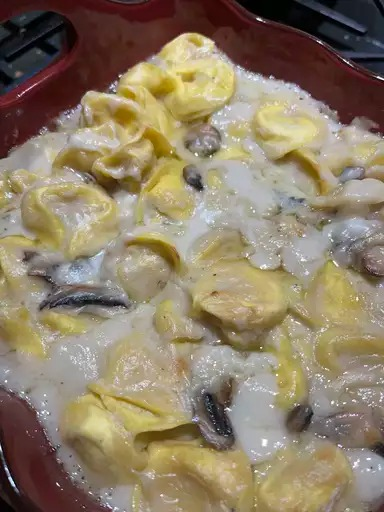

"Odin Recipes"

Description
This recipe is exactly what my Hubby (that's what I call my Husband,
I know, it's cute isn't it?) loves to eat after a long day at the saw mill.
This meal is perfect for those cold and windy winter days where the marble floors
in your estate are so cold you don't know how your Hubby was able to get out
of bed and go work his 18 hour shift while you HAD to stay home and binge PLL again.
Ladies, this meal will not save your marriage, but it will keep him around long enough
for you to continue to suck the life and happiness from him, all while draining his bank account!
Ingredients
- 1 (16 ounce) package of cheese tortellini
- 1 tablespoon canola oil
- 2 tablespoons of butter
- 1/4 cup all-purpose flour
- 2 cups milk
- Salt and ground black pepper to taste
- 1 cup grated Parmesean cheese
Steps
- Preheat the oven to 400 degrees F (200 degrees C)
- Fill a large pot with lightly salted water and bring to
a rolling boil; stir in tortellini and return to a boil.
Cook uncovered, stirring occasionally, until the tortellini
float to the top and the filling is hot, 3 to 5 minutes.
Drain and place into a 9-inch baking pan.
- Heat canola oil in a large saucepan over medium heat.
Add mushrooms and cook until golden brown, 12 to 15 minutes.
Stir butter into the pan until melted; stir in flour slowly and
cook until golden, about 1 minute. Pour milk slowly into the saucepan,
stirring continuously. Reduce heat to medium-low and cook until sauce
begins to bubble, 7 to 8 minutes.
- Remove saucepan from heat. Season with salt and pepper. Stir in Parmesan
cheese. Pour sauce over cooked tortellini in the baking pan.
- Bake in the preheated oven until sauce begins to brown, 20 to 25 minutes.
Serve immediately.